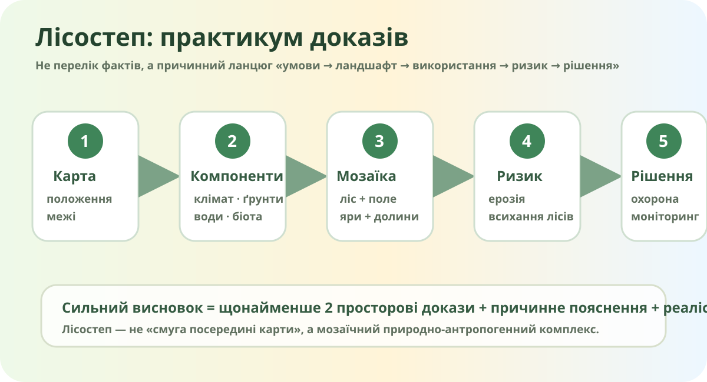

Чому це лісостеп, а не просто «поле з деревами»?

Реальний лісостеповий ландшафт Полтавської області. Encyclopedia of Ukraine.

Знайдіть лісостеп без кольорової підказки
OpenStreetMap. Карта показує реальні населені пункти, дороги, ліси й водні об’єкти, але не малює межу природної зони за Вас.
Картографічна місія
- Знайдіть Київ, Вінницю, Черкаси, Полтаву, Харків.
- Порівняйте частку видимих лісових масивів і відкритих сільськогосподарських площ.
- Виберіть дві області, де мозаїка «ліс + поля + річкові долини» читається найкраще.
Заповніть не таблицю фактів, а таблицю причин
| Компонент | Що характерно для лісостепу | Як це впливає на ландшафт/господарство |
|---|---|---|
| Рельєф | ||
| Клімат | ||
| Ґрунти | ||
| Рослинність |
Ліс
Лісистість Лісостепу — близько 13% за даними Держлісагентства.
Для порівняння: Полісся — 26,8%, Степ — 5,3%.
Поле
Родючі ґрунти й сприятливий клімат зробили лісостеп одним із найінтенсивніше освоєних землеробських регіонів України.
Межа
Харківська область лежить на стику лісостепової та степової зон: центральні, північні й західні райони мають лісостепові риси, південні й східні — степові.
Коли родючий схил стає проблемою?
Умовний ризик водної ерозії: 30/100
Це навчальна причинна модель, не прогноз конкретного поля. Дослідження Правобережного Лісостепу підтверджують важливість рельєфу, гідрометеорологічних умов і землекористування для водної ерозії.
Ризик 2026: ліс теж не «вічно зелений»
За даними Держлісагентства, станом на 1 липня 2026 року загальна площа всихання лісових насаджень у підпорядкованих лісах становила 247,4 тис. га; серед порід значну частку становили сосна й дуб.
Виберіть причинний ланцюг
Ви плануєте громаду в лісостепу
Є схилова рілля, невеликий дубовий ліс, балка, річка й нова дорога. Оберіть два пріоритети й обґрунтуйте їх.
Лісостеп за кілька хвилин
Після перегляду випишіть лише один факт, який підтверджує Ваш висновок, і один, який змушує його уточнити.
Фінальна перевірка доказів
Аргументований висновок
— / 10
Рубрика: карта й положення — 2; природні компоненти та причинність — 2; землекористування — 2; ризики — 2; висновок і рішення — 2.
Домашнє завдання
За підручником: опрацюйте відповідний параграф про лісостеп. На електронній карті або супутниковому знімку оберіть одну ділянку лісостепу й зробіть міні-паспорт: місце, тип землекористування, природний компонент, один ризик, одне рішення.
Джерела й дані
- Державне агентство лісових ресурсів України — лісистість природних зон і стан лісів.
- Харківська ОВА — приклад переходу лісостеп → степ.
- Одеський національний університет — дослідження водної ерозії Правобережного Лісостепу.
- OpenStreetMap, Copernicus Data Space, NASA Worldview — просторові дані.